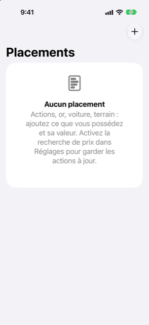

Guide › Placements
Placements et investissements
Actions, fonds, or : ce que vous possédez, ce que cela vaut, votre gain.
L'écran Placements liste ce que vous possédez et avez valorisé : actions, fonds, or et autres métaux, biens immobiliers, véhicules, et tout ce que vous ajoutez. Il répond à deux questions au même endroit : ce que valent vos placements maintenant, et quel a été votre gain.

Quand l'utiliser
- Vous possédez des actions, un fonds, de l'or ou un autre actif et voulez que sa valeur compte dans vos finances.
- Vous achetez davantage de quelque chose, ou en vendez une partie, et voulez que le coût, le produit et le gain soient calculés.
Les placements se trouvent dans Aperçu, sous Placements. Les mêmes éléments apparaissent aussi sous Comptes, Investissements.
Pas à pas
Ajouter un placement
- Ouvrez Aperçu, puis Placements, puis appuyez sur le bouton Ajouter (le signe plus).
- Choisissez le Type : Action ou fonds, Bien immobilier, Véhicule, Or ou autre métal, ou Autre. Le type détermine ce que propose la page du placement, comme un champ de symbole boursier.
- Saisissez le nom, la devise, les unités, et la valeur d'une unité aujourd'hui.
- Pour une action ou un fonds, saisissez son symbole boursier (par exemple
WVRA.L) si vous voulez que son prix soit recherché en ligne. - Dans Ce que ça a coûté (facultatif), saisissez ce que vous avez payé au total. Laissez-le vide, ou saisissez 0, pour des actions reçues gratuitement, comme des RSU acquises. Elles ne coûtent rien, donc toute leur valeur compte comme gain.
- Sous Payé depuis, choisissez un compte si vous l'achetez maintenant, ou Déjà possédé si aucun solde de compte ne doit changer.
Garder la valeur à jour
- Ouvrez la page du placement. Sous Mettre à jour la valeur, saisissez la quantité et la valeur d'une unité, puis appuyez sur Enregistrer.
- Pour corriger un ancien chiffre, allez dans Valeurs enregistrées et appuyez sur la valeur. Balayez-en une pour supprimer une erreur.
- Sur la page du placement, appuyez sur Ce que ça a coûté pour corriger ce que vous avez payé. Cela corrige l'enregistrement ; aucun solde de compte ne change.
- Appuyez sur Plus pour le renommer, changer son type, ou utiliser Acheter plus… et Vendre….
La valeur la plus récente enregistrée est celle en vigueur, et une valeur que vous saisissez l'emporte sur une valeur récupérée le même jour. Tant qu'un placement n'a pas de valeur enregistrée, sa ligne affiche Au coût, pas encore de prix et il est valorisé à ce que vous avez payé.
Acheter plus
- Sur la page du placement, appuyez sur Plus, puis Acheter plus….
- Saisissez les unités ajoutées, le prix unitaire aujourd'hui, et ce que vous avez payé au total. Le total se remplit automatiquement comme unités fois prix jusqu'à ce que vous tapiez le vôtre ; saisissez 0 pour des actions qui deviennent acquises ou sont attribuées gratuitement.
- Sous Payé depuis, choisissez le compte depuis lequel c'est payé, ou Aucun compte (déjà payé, ou gratuit).
- Vérifiez l'aperçu Après cela — unités, coût total, coût moyen par unité — puis appuyez sur Enregistrer.
Vendre
- Sur la page du placement, appuyez sur Plus, puis Vendre….
- Saisissez les unités à vendre (toutes par défaut), le prix unitaire, les éventuels frais, et la date.
- Choisissez L’argent va vers : le compte qui reçoit l'argent. S'il est dans une autre devise, saisissez aussi le montant réellement arrivé, pour que Damla garde les deux côtés et le taux qu'il implique.
- Vérifiez l'aperçu Ce que cela fait — produit, frais, ce que vous recevez, le coût de ces unités et le gain ou la perte — puis appuyez sur Vendre.
Le compte reçoit le produit moins les frais, et les frais sont comptabilisés comme un coût. Les unités vendues prennent leur part du coût au coût moyen par unité ; la différence est comptabilisée comme revenu dans Gains sur placements, ou comme coût dans Pertes sur placements. Tout vendre retire le placement de vos investissements et de votre valeur nette ; son historique reste.
Lire le rapport
La carte vedette en haut de Placements montre ce que valent vos placements (Vaut maintenant) et votre Gain sur placements, avec un pourcentage lorsqu'il y a un coût auquel mesurer le gain. En dessous :
- Où c’est : un graphique en anneau de la répartition des placements, chaque part étiquetée par nom, part et valeur.
- La ligne de chaque placement montre sa valeur, et une petite courbe de tendance dès qu'il y a au moins deux valeurs enregistrées.
- Les gains et les pertes sont montrés avec un signe et une flèche, et un pourcentage quand on peut en calculer un — jamais par la couleur seule.
Bon à savoir
- La recherche de prix est facultative et désactivée par défaut : avec un symbole boursier enregistré et l'interrupteur activé, les prix s'actualisent environ une fois par jour, et seuls les symboles boursiers sont envoyés quelque part. Voir Prix et taux de change.
- Un bien immobilier avec un loyer lié montre le loyer reçu sur les 12 derniers mois et son rendement brut. Voir Biens immobiliers et voitures.
- Vos placements comptent dans votre valeur nette à la valeur que vous leur avez donnée, pas seulement au coût. Voir Tendances et valeur nette.
À lier
Quelque chose n’est pas clair ou manque ? Écrivez à support@raveniq.ai en indiquant la page.